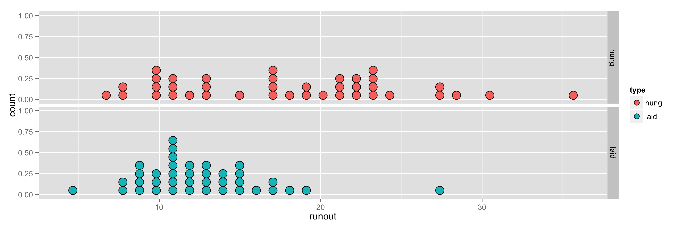

name: inverse layout: true class: center, middle, inverse --- # STAT 105: Lecture 1 ## Why Engineers Study Statistics ### Chapter 1: Introduction .footnote[Course page: [imouzon.github.io/stat105](https://imouzon.github.io/stat105)] --- # Section 1.1 ## Engineering Statistics: What and Why --- layout: false .left-column[ ## What and Why ### Engineers In General ] .right-column[ <center> <h2> What Do Engineers Do? </h2> </center> - Design/build/operate/improve some system - Use both **quantitative theories** (i.e., mathematical) and **scientific principles** (i.e., physics, chemistry, psychology(?)) as a guide - Obvious issue - math/science vast, no one knows everything. - Additionally, engineers must work outside of "lab conditions" - there is no control over the environment, the users, the timing, ... ] --- name: inverse layout: true class: center, middle, inverse --- # So, here's the situation: ## The "system" you want to improve is essentially unique ## There are competing theories that all seem equal ## Experts disagree bitterly about what to do # What's an engineer to do??? --- #Option 1: Just Give Up ## A few drawbacks to this one --- #Option 2: Gather Some Data ## Figure Out What Really Matters in the System --- layout: false .left-column[ ## What and Why ### Engineers In General ### Data? ] .right-column[ ## What Do I Mean Data? Data is **essentially just information** we can record. Examples are incredibly easy to come up with: - Students with majors and courses they enrolled in ``` student major course John Philosophy EASY 101 Kate Engineering SMRT 500 Mike Mathematics MATH 000 ``` - Amount I can bench over time ``` Date Weight 06/01 55 lbs. 06/02 56 lbs. 06/03 57 lbs. 06/04 59 lbs. ... ... 08/21 345 lbs. ``` Really trivial to come up with examples ] --- name: inverse layout: true class: center, middle, inverse --- <center> <h1> Getting Data is Easy </h1> <img src="www/figs/all_this_data_orig1.jpg" alt="dmc logo" height="405"> <h1> Getting Good Data is Hard </h1> </center> --- layout: false .left-column[ ## What and Why ### Engineers In General ### Data? ### Example 1 ] .right-column[ ##Two Competing Theories ###Goal: Load gears into a continuous carburizing furnace to minimize distortion during heat treating - **Theory 1**: Load the gears laid in a stack - **Theory 2**: Hang the gears from a bar - **Complications**: No two gears exactly the same - if we test it how do we decide what was the effect of the gear and what was the effect of the loading method? - **Smart engineer**: tried it both ways and collected the distortion measures from multiple attempts ``` Method Distortion measure (.0001 in.) Laid 5, 8, 8, 9, 9, 9, 9, 10, 10, ..., 19, 27 Hung 7, 8, 8, 10, 10, 10, 10, 11, 11, ..., 31, 36 ``` ] --- layout: false .left-column[ ## What and Why ### Engineers In General ### Data? ### Example 1 ] .right-column[ ##Two Competing Theories ###Goal: minimize distortion ``` Method Distortion measure (.0001 in.) Laid 5, 8, 8, 9, 9, 9, 9, 10, 10, ..., 19, 27 Hung 7, 8, 8, 10, 10, 10, 10, 11, 11, ..., 31, 36 ``` Plots and summary values help us see what's going on: <center>  </center> ``` Mean hung runout: 17.9 Mean laid runout: 12.6 ``` Looks like laying gears in a stack is best ] --- layout: false .left-column[ ## What and Why ### Engineers In General ### Data? ### Example 1 ### Engineering Statistics ] .right-column[ ## Engineering Statistics Collecting good data is part of what engineering statistics is concerned with, but of course that's only the first part. Our text book defines it this way: > **Engineering Statistics** is the study of how *best* to > > 1. Collect engineering data > 2. summarize or describe engineering data, and > 3. draw formal inferences and practical conclusions on the basis of engineering data > > all while recognizing the reality of variation Recognizing the "reality of variation" in the distortion example led the engineer to run multiple tests This helped rules out the possibility that hanging gears is better since the chance that the gears were worse so often is pretty low ] --- name: inverse layout: true class: center, middle, inverse --- # All good engineers use statistical tools # The only question is whether they will use good ones --- # Section 1.2 ## Basic Terminology --- layout:false .left-column[ ## What and Why ## Terms ### Types of Studies ] .right-column[ ## Types of Statistical Studies > An **observational study** is one in which the investigator's role is basically passive. A process or phenomenon is watched and data are recorded, but there is no intervention on the part of the person conducting the study. > An **experimental study** (or, more simply, an experiment) is one in which the investigator's role is active. Process variables are manipulated, and the study environment is regulated. - Experiments: faster, more reliable results, helps determine causal relationships. - These are the "perfect world" scenarios - most studies blend both. - Even under ideal circumstances, some variables can not be controlled. ] --- layout:false .left-column[ ## What and Why ## Terms ### Types of Studies ] .right-column[ ## Extent to Which Results Can be Applied > An **enumerative study** is one in which there is a particular, well-defined, finite group of objects under study. Data are collected on some or all of these objects, and conclusions are intended to apply only to those objects. > A **population** is the entire group of objects about which one wishes to gather information in a statistical study. > A **sample** is a group of objects on which one actually gathers data. In the case of an enumerative investigation, the sample is a subset of the population (and can in some cases include the entire population). - Example: If I am ordering 5000 microprocessors from Intel, I may test a few to see how well they actually work. In this case, the shipment is my population and the ones I test make the sample. I hope to use the sample to make a judgement about the entire shipment (so if 3/4 don't work, I should probably send the shipment back). ] --- layout:false .left-column[ ## What and Why ## Terms ### Types of Studies ] .right-column[ ## Extent to Which Results Can be Applied > An **analytical study** is one in which a process or phenonmeon is investigated at one point in space and time with the hope that the data collected will be representative of a system behavior at other places and times under similar conditions. In this kind of study, there is rarely, if ever, a particular well-defined group of objects to which conclusions are thought to be limited. - **Analytical studies** tend to be the most important in engineering. - Ex: Stock prices are dropping. I may determine if something doesn't change in the trading environment, they will continue dropping. - Ex: The gear distortion example (Chapter 1, Example 1). ] --- layout:false .left-column[ ## What and Why ## Terms ### Types of Studies ] .right-column[ # Telling the Difference ## Observation vs. Experiment - If things are being manipulated by the researcher, it's more of an experiment than an observational study. ## Enmerative vs. Analytical - We generally frown on people discussing **conceptual populations** - populations consisting of "all widgets that have heretofore existed or could one day exist in this universe or some other" type stuff - Basically, if the population isn't well described, concrete thing, it's an analytical study. ] --- layout:false .left-column[ ## What and Why ## Terms ### Types of Studies ### Types of Data ] .right-column[ # Types of Data: Qualitative > **Qualitative** or **categorical** data are the values of basically nonnumerical characteristics associated with items in a sample. - Ex: Eye color, choice of major, hometown, response to the question "have you ever been to Europe" Qualitative variables can have a natural ordering - it's just that the ordering doesn't translate to an amount of something. Only by aggrigation and counting can we get meaningful numerical values from qualitative variables. - Example: Classifying parts as (1) Conforming (it works), (2) Rework (fixable) and (3) Scrap (broken forever) ] --- layout:false .left-column[ ## What and Why ## Terms ### Types of Studies ### Types of Data ] .right-column[ # Types of Data: Quantitative > **Quantitative** or **numerical** data are values of numerical characteristics associated with items in a sample. - Ex: Counts of the number of times some phenomenon occurs, measurements like weight/height We can further describe **continuous** variables (where the actual result could be any value in a continuous interval) from **discrete** variables (where the number of values the variable could take are countable). ] --- layout:false .left-column[ ## What and Why ## Terms ### Types of Studies ### Types of Data ### Ex: Machine Parts ] .right-column[ # Example: Machine Parts > Suppose we get a shipment of 5000 machine parts and would like to verify that the shipment meets the standards the machinist agreed to. We take out 100 parts and examine them carefully. To verify that the parts are as strong as we anticipated, we measure the "Rockwell hardness" with a machine that is accurate to the first decimal place. We also examine each part for scratches and record it weight. Further, we run the part in a test machine to determine if it works correctly. **Question**: How many data values are we collecting from each part and what type of data values are they? ] --- layout:false .left-column[ ## What and Why ## Terms ### Types of Studies ### Types of Data ### Ex: Machine Parts ### Uni/Multi/Repeat ] .right-column[ # Number of Measurements > **Univariate data** arise when only a single characteristic of each sample item is observed. > **Multivariate data** arise when observations are made on more than one characteristic of each sampled item. > **Bivariate data** are a special case of multivariate data where two characteristics are observed for each sampled item. > **Repeated measures data** arise when a sample item is being measured on the same characteristic but in multiple contexts (either with different instruments or in different scenarios). > **Paired data** are a special case of repeated measures data where the sample item is measured twice on the same characteristic. ]